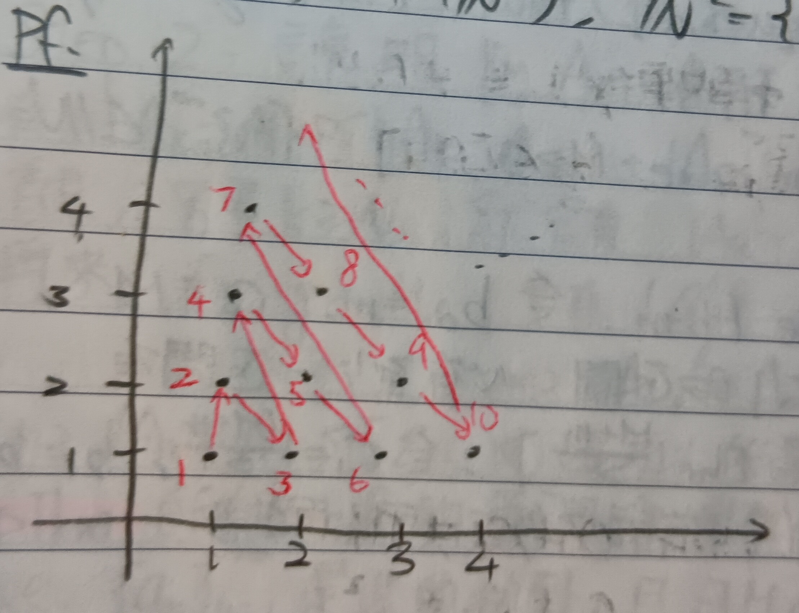

這份筆記是關於集合的勢的定義與可數性。
可數集合
定義 1：勢 (Cardinality)
給定集合\(A,B\)(這裡通常是討論無限集)。若存在一對一映射\(\phi:A\to B\)，則我們說\(A\)的勢小於等於\(B\)的勢，記做\(|A|\leq|B|\)。而若同時也存在一對一映射\(\psi:B\to A\)，則\(A\)的勢等於\(B\)的勢，記做\(|A|=|B|\)。
定義 2：可數集 (Countable Set)
對於無限集合\(\mathcal{S}\)，若\(|\mathcal{S}|=|\mathbb{N}|\)，則稱\(\mathcal{S}\)為可數集。
例 2-1
整數\(\mathbb{Z}\)是可數集。
證明：考慮映射\(\phi:\mathbb{Z}\to\mathbb{N}\)，其中對於\(x\in\mathbb{Z}\)， \[ \phi(x)=\left\{ \begin{aligned} 2x&,\mbox{ if }x>0\\ -2x+1&,\mbox{ if }x\leq 0 \end{aligned} \right. \] 很容易可以發現這樣的\(\phi\)是一對一且映成的，故有\(|\mathbb{Z}|=|\mathbb{N}|\) i.e. \(\mathbb{Z}\)可數。QED
例 2-2
\(\mathbb{N}^2=\{(a,b):a,b\in\mathbb{N}\}\)是可數集。
證明：我們如下圖1定義映射\(\phi:\mathbb{N}^2\to\mathbb{N}\)：
很容易可以發現這樣的\(\phi\)是一對一且映成的，故有\(|\mathbb{N}^2|=|\mathbb{N}|\) i.e. \(\mathbb{N}^2\)可數。QED
註記 2-2-1
用類似例2-2的方法，很容易可以發現對於任意\(n\in\mathbb{N}\)，\(\mathbb{N}^n\)都是可數的。
例 2-3
有理數集\(\mathbb{Q}\)是可數的。
證明：我們知道 \[ \mathbb{Q}=\left\{\frac{q}{p}:p,q\in\mathbb{Z},p\neq 0\right\} \] 故 \[ |\mathbb{Q}|\leq|\mathbb{Z}^2|=|\mathbb{N}^2|=|\mathbb{N}| \] 然而由於\(\mathbb{N}\subseteq\mathbb{Q}\)，故顯然有\(|\mathbb{N}|\leq|\mathbb{Q}|\)，於是即有\(|\mathbb{Q}|=|\mathbb{N}|\) i.e. \(\mathbb{Q}\)是可數集。QED
實數的不可數性
定理 3
記所有\([0,1]\)中的實數構成的集合為\(\mathbb{R}_{[0,1]}\)，則\(\mathbb{R}_{[0,1]}\)不是可數集。事實上有 \[ |\mathbb{R}_{[0,1]}|>|\mathbb{N}| \]
證明：考慮實數\(x\in[0,1]\)，我們用這裡的定義17的方法將\(x\)表示為十進位小數。其中我們總是將有理數表為無窮小數，例如將\(0.5\)表為\(0.4999\dots\)(這麼做是為了確保唯一性)。
假設\(\mathbb{R}_{[0,1]}\)是可數的，則可以將\(\mathbb{R}_{[0,1]}\)中的所有元素排列成數列\(\{b_j\}_{j=1}^\infty\)(即有\(\mathbb{N}\)到\(\mathbb{R}_{[0,1]}\)的一對一映射\(\phi(j)=b_j\)與\(\mathbb{R}_{[0,1]}\)到\(\mathbb{N}\)的一對一映射\(\phi(b_j)=j\))。則將\(b_j\)都表為十進位小數，我們有 \[
\begin{aligned}
b_1&=0.a_1^1a_2^1a_3^1\dots\\
b_2&=0.a_1^2a_2^2a_3^2\dots\\
&\vdots\\
b_k&=0.a_1^ka_2^ka_3^k\dots\\
&\vdots
\end{aligned}
\] 其中\(a_i^j\in\{0,1,2,3,4,5,6,7,8,9\}\), \(\forall
i,j\in\mathbb{N}\)。則考慮某個實數\(b\in[0,1]\)，其十進位表示法為 \[
b=0.c_1c_2c_3\dots
\] 其中\(0\neq c_1\neq a_1^1\),
\(0\neq c_2\neq a_2^2\), \(0\neq c_3\neq
a_3^3\)，以此類推。可以發現對於任意\(j\)都有\(b\neq
b_j\)，故\(\{b_j\}_{j=1}^\infty\)並未包含\([0,1]\)中的所有實數。矛盾。故 \[
|\mathbb{R}_{[0,1]}|>|\mathbb{N}|
\] 即\(\mathbb{R}_{[0,1]}\)是不可數的。QED
註記 3-1
令 \[ \mathbb{N}^\infty=\{\{a_j\}_{j=1}^\infty:a_j\in\mathbb{N}\} \] 用類似定理3的方法易知\(\mathbb{N}^\infty\)也是不可數的。事實上有\(|\mathbb{N}^\infty|=|\mathbb{R}|\)(\(\mathbb{R}\)到\(\mathbb{N}^\infty\)的一對一映射是很容易建構的，而\(\mathbb{N}^\infty\)到\(\mathbb{R}\)的一對一映射可以用連分數，在此就不贅述了)。